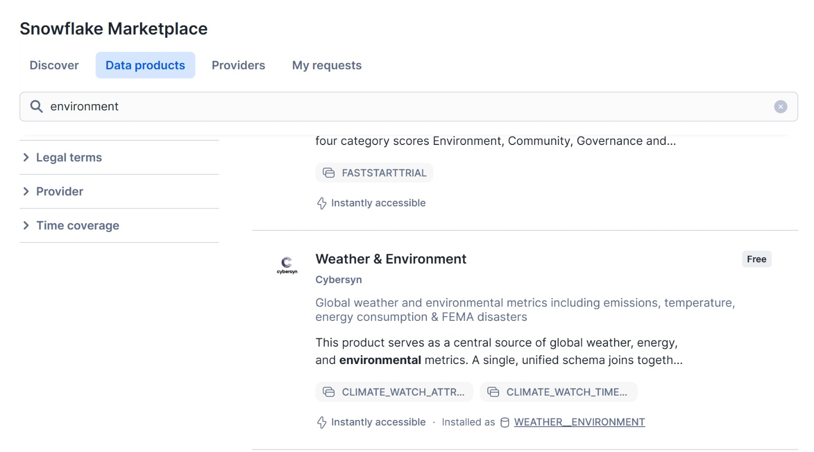

ETL & Data Warehousing with Snowflake
Introduction
This project focused on database management and data engineering using PostgreSQL, Snowflake, SQL, and Python. The work centered on building reliable ETL workflows and consolidating multi-source operational and financial data into an analysis-ready format for reporting and correlation analysis.
Objective
- Build ETL workflows to consolidate 400,000+ records into a clean, analysis-ready dataset.
- Integrate data across PostgreSQL, Snowflake, and Python pipelines to unify operational and financial information.
- Support structured financial reporting by reviewing trends and relationships in the data.
- Explore potential correlations between external drivers (e.g., weather fluctuations) and purchase orders using multi-source data.
- Lead a five-person team using clear task ownership and coordinated delivery.
Data Description
This case integrates operational, financial, and environmental data from multiple sources to support structured analysis of purchase orders and invoices.
The datasets used include:
1. Purchase Order Data (CSV – 41 Monthly Files)
- Line-level purchase order records
- Includes quantities received, expected prices, supplier identifiers, and order dates
- Used to calculate total purchase order amounts
2. Supplier Invoice Data (XML)
- Invoice-level financial records
- Includes invoice amounts, tax information, and transaction dates
- Used to compare invoiced amounts against quoted purchase orders
3. Supplier Data (PostgreSQL)
- Supplier-level reference data
- Includes supplier location (ZIP code), identifiers, and related attributes
- Used to connect operational data to geographic information
4. Weather Data (Snowflake Marketplace – NOAA via Cybersyn)
- Daily temperature data
- Used to explore potential relationships between weather fluctuations and purchasing behavior
Together, these datasets allow us to:
- Reconcile purchase orders and invoices
- Detect discrepancies between quoted and invoiced amounts
- Examine whether external factors (e.g., temperature) are associated with purchasing patterns
Snowflake Marketplace Setup
The NOAA Weather & Environment dataset was accessed through Snowflake Marketplace (Cybersyn provider).
The dataset was installed in Snowflake as the WEATHER__ENVIRONMENT database.
Figure 1. Snowflake Marketplace – Weather & Environment Product

Figure 2. Installed Weather - Environment Database In Snowflake 
Case Overview
The objective of this case was to design and implement an end-to-end ETL workflow using Snowflake and Python. Rather than transforming data in local tools, most processing was executed directly within Snowflake to ensure scalability and performance.
The workflow consisted of:
- Extracting data from CSV, XML, PostgreSQL, and Marketplace sources
- Loading the data into Snowflake
- Transforming the data into structured, analysis-ready tables
- Joining operational, financial, and environmental datasets
- Creating summarized outputs for reconciliation and correlation analysis
The final dataset enables comparison of:
- Purchase Order Amount
- Invoice Amount
- Weather Conditions (by supplier ZIP code and date)
This structure supports automated discrepancy detection and cross-source analytical exploration.
Purchase Order Aggregation
Purchase order data was provided as 41 separate monthly CSV files at the line-item level. These files were consolidated into a single dataset and loaded into Snowflake.
Because each purchase order contains multiple line items, totals were calculated for each PurchaseOrderID by summing:
This produced one summarized record per purchase order, reducing approximately 8,000+ line items to about 2,100 purchase orders. The result is a clean table of total quoted amounts by supplier and order date.
Invoice Amount for Each Purchase Order ID
Supplier invoices were provided in XML format and converted into a structured dataset before being loaded into Snowflake.
From the supplier transactions data, invoice totals were extracted using the Amount Excluding Tax field. The data was organized by:
- PurchaseOrderID
- SupplierID
- InvoiceAmount
- TransactionDate
This created a comparable summary of invoiced amounts for each purchase order.
Joining Purchase Orders and Invoices
The summarized purchase order table and invoice table were joined using PurchaseOrderID and SupplierID.
A new field, invoiced_vs_quoted, measures the gap between the quoted purchase amount and the invoice amount:
This value captures the difference between the quoted purchase amount and the invoiced amount.
The final reconciliation table contains approximately 2,100 matched records and provides a clear view of pricing differences across suppliers and transactions.
Supplier Postal Codes
Supplier reference data was extracted from PostgreSQL and loaded into Snowflake. From this dataset, each supplier’s postal code was identified and standardized.
A simple reference table was created containing:
- SupplierID
- PostalPostalCode
This table provides the geographic link needed to connect supplier activity with external data sources.
Weather Data
To examine whether weather conditions were associated with purchasing activity, daily temperature data was added to the analysis.
A national ZIP code reference file was used to obtain latitude and longitude for each postal code. Each supplier ZIP code was then matched to the nearest NOAA weather station available in Snowflake Marketplace.
From the NOAA dataset, daily maximum temperature values were extracted. The resulting table, supplier_zip_code_weather, contains:
- ZIP code
- Date
- Daily high temperature
Approximately 1,300 ZIP-date temperature records were generated.
This structure allows supplier transactions to be analyzed alongside daily weather conditions using shared ZIP codes and dates.
Joining Everything Together
The final step combined all prepared datasets:
- Purchase order and invoice comparison table
- Supplier reference data
- Daily weather data by ZIP code
The tables were joined using:
- Supplier ZIP code
- Transaction date
Only records with available temperature data were included.
Result
The final dataset contains:
- ZIP code
- Date
- Daily high temperature
- Purchase order and invoice comparison information
Approximately 1,300 matched records were produced.
Observation
After joining the datasets, no measurable relationship was observed between daily temperature and the difference between quoted and invoiced amounts. The invoiced_vs_quoted values did not vary in a way that suggested weather influence.
Based on this analysis, weather conditions do not appear to explain invoice discrepancies in this dataset.